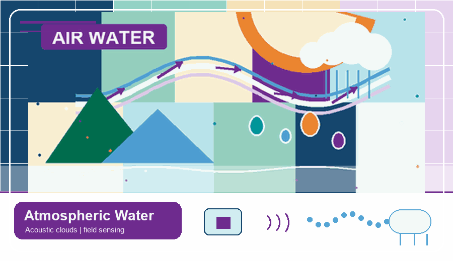
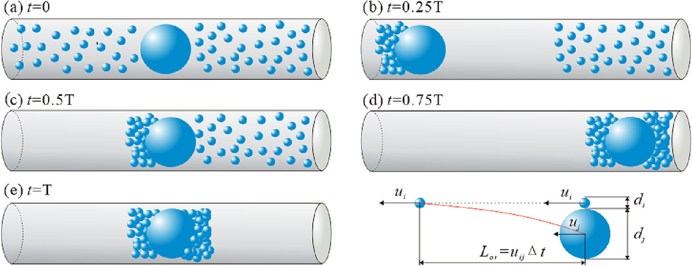
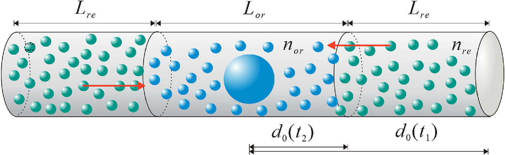
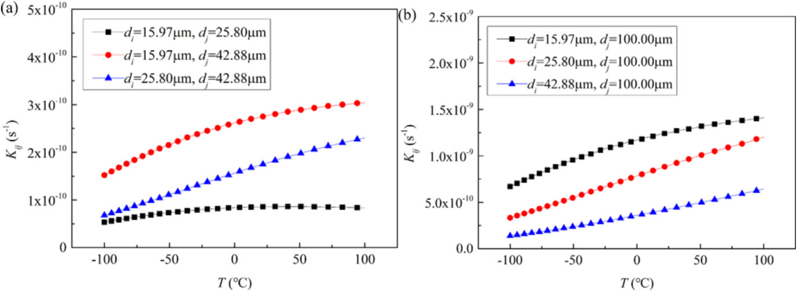
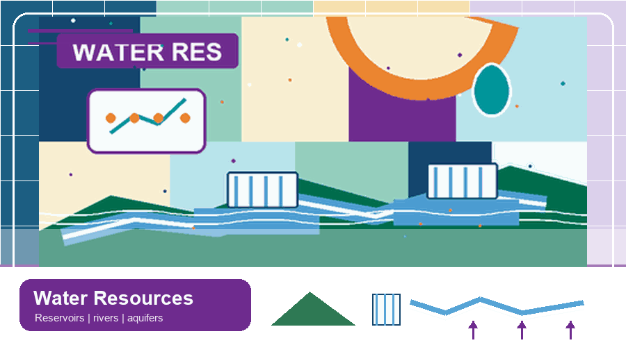
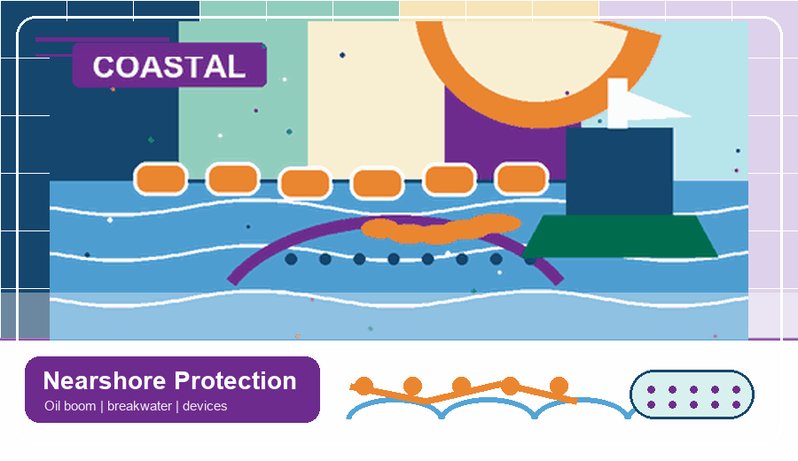
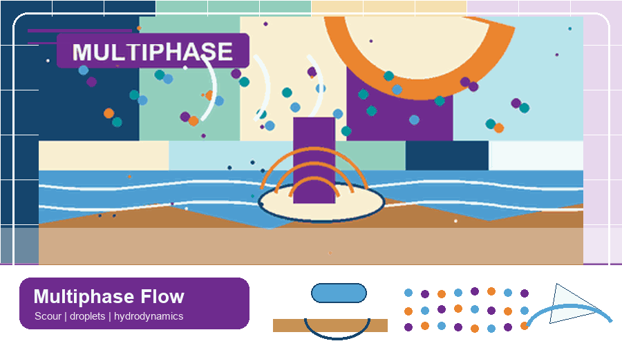

Mech | Acoustic agglomeration and isotope-exchange theoryCollision-kernel theory links acoustic, hydrodynamic, Brownian, and turbulent agglomeration with droplet–vapor isotope exchange.
Mech | Acoustic agglomeration and isotope-exchange theoryCollision-kernel theory links acoustic, hydrodynamic, Brownian, and turbulent agglomeration with droplet–vapor isotope exchange.Research Framework
Physics-guided digital twins for hydrosphere applications
We advance digital twin technologies rooted in physical mechanics and high-fidelity numerical simulation, integrating monitoring data and AI for diagnosis, prediction, regulation, and risk management across hydraulic and hydrometeorological systems in the hydrosphere.
3MMulti-scale · Multi-physics · Multi-disciplinary
DTDigital Twin
Water Sustains
From fundamental mechanics and high-fidelity simulation to practical applications
∫ physical traces dt→living digital twin
From accumulated steps, a thousand-mile journey; from physical traces, a living digital twin.
Water Overturns
Atmospheric River
Monitoring, regulation, resource utilization
Monitoring, regulation, resource utilization
Surface Water
River basins, diversion, ecological replenishment
River basins, diversion, ecological replenishment
Groundwater
Recovery, storage, surface-groundwater exchange
Recovery, storage, surface-groundwater exchange
Ocean & Coastal Water Waves
Wave-current dynamics, storm extremes, oil spill
Wave-current dynamics, storm extremes, oil spill
Marine Engineering Structures
Breakwaters, oil booms, pipelines, wave-energy devices
Breakwaters, oil booms, pipelines, wave-energy devices
Multiphase Flow & Sediment
Scour, sediment transport, particle-fluid dynamics
Scour, sediment transport, particle-fluid dynamics

Module Guide
Module 01
Atmospheric water-resource utilization: acoustic microphysics, engineered intervention, and field evaluation
This module investigates atmospheric water-resource utilization across scales, from droplet collision and isotope-exchange mechanisms to laboratory threshold experiments, multiphase numerical modeling, acoustic-device optimization, operation-weather diagnosis, and field evaluation under plateau precipitation conditions.
Mech | Acoustic agglomeration and isotope-exchange theoryCollision-kernel theory links acoustic, hydrodynamic, Brownian, and turbulent agglomeration with droplet–vapor isotope exchange. Tech | Laboratory acoustic-response experimentsControlled chamber experiments quantify droplet-spectrum and isotope responses while identifying frequency-dependent SPL thresholds.
Tech | Laboratory acoustic-response experimentsControlled chamber experiments quantify droplet-spectrum and isotope responses while identifying frequency-dependent SPL thresholds. Tech | Numerical simulation and sound-field optimizationCFD-DEM and CFD-PBM models connect droplet collision, breakup, population evolution, and acoustic-device optimization.
Tech | Numerical simulation and sound-field optimizationCFD-DEM and CFD-PBM models connect droplet collision, breakup, population evolution, and acoustic-device optimization. Field | Operation-weather diagnosis and monitoringRadar, microwave radiometry, disdrometers, and stability indices identify and monitor favorable precipitation-operation windows.
Field | Operation-weather diagnosis and monitoringRadar, microwave radiometry, disdrometers, and stability indices identify and monitor favorable precipitation-operation windows. Field | Summer rainfall-enhancement evaluationRadar, raindrop-size distributions, and rain gauges assess operation-associated cloud and precipitation changes in plateau field tests.
Field | Summer rainfall-enhancement evaluationRadar, raindrop-size distributions, and rain gauges assess operation-associated cloud and precipitation changes in plateau field tests.Background
Atmospheric water-resource development requires linking cloud microphysics, aerosol/droplet aggregation, acoustic forcing, and complex terrain hydrometeorology.
Main Outcomes
Developed experimental, numerical, and field-observation workflows for acoustic agglomeration, cloud-precipitation intervention, and utilization-effect evaluation in plateau and basin source regions.
Aggregation Mechanisms
Acoustic and turbulent agglomeration theory for droplet aerosols
This theory block summarizes the kernel-based framework used to explain how low-frequency acoustic forcing, hydrodynamic interaction, Brownian motion, and turbulence promote collisions among fog, cloud, and rain droplets.

Collision kernelKij = dNij / (ni nj dt)
Defines collision frequency per unit concentration and time.
Particle relaxationτp = ρpd2 / (18νρg)
Connects droplet size, inertia, gas viscosity, and response to air oscillation.
Acoustic responseλp = 1 / √(1 + ω2τp2)
Represents the carrying coefficient of particle motion relative to the oscillating fluid.
Sliding responseλg = ωτp / √(1 + ω2τp2)
Measures particle-gas relative motion that drives acoustic collision.


Key Findings
- Orthokinetic and hydrodynamic mechanisms are the dominant acoustic pathways for droplet-aerosol agglomeration.
- An optimal acoustic-frequency range appears for different droplet pairs, especially around the low-frequency band used in cloud and fog intervention.
- Increasing sound pressure level strengthens the aggregation kernel, while size disparity between droplets improves collision efficiency.
- Hydrodynamic interaction acts as a refill mechanism and can remain effective even when particle spacing is much larger than droplet diameter.
- Brownian and turbulent kernels extend the model from ideal acoustic motion toward real atmospheric multiphase environments.
Source: [1] Shi, Y., Wei, J., Bai, W., Zhao, Z., Ayantobo, O.O., & Wang, G. (2023). Theoretical analysis of acoustic and turbulent agglomeration of droplet aerosols. Advanced Powder Technology, 34, 104145. https://doi.org/10.1016/j.apt.2023.104145.
Linked Papers and Projects
Remote Sensing, Atmospheric Research, Journal of Applied Meteorology and Climatology, Physics of Fluids, Powder Technology, Advanced Powder Technology, PI grants, and related patents.

Module Guide
Module 02
Integrated water-resource diagnosis and regulation: replenishment, storage, balance, and forecasting
This module connects water-resource processes from reservoir releases and river–aquifer exchange to plateau precipitation, lake-storage dynamics, regional water balance, and available-water forecasting. Hydrodynamic models, remote sensing, coupled hydrological models, and machine learning support diagnosis and regulation across river, lake, aquifer, and basin scales.
 Tech | Ecological river replenishment and flow restorationHydrodynamic routing and water-balance analysis quantify river rewetting, seepage, wetted-area recovery, and release strategies, while data-driven models reconstruct river-stage evolution and assess basin-scale replenishment performance.
Tech | Ecological river replenishment and flow restorationHydrodynamic routing and water-balance analysis quantify river rewetting, seepage, wetted-area recovery, and release strategies, while data-driven models reconstruct river-stage evolution and assess basin-scale replenishment performance. Tech | Groundwater recharge response to replenishmentSWAT-MODFLOW resolves runoff generation, river infiltration, aquifer recovery, and groundwater response to replenishment and rainfall extremes, while data-driven modeling supports prediction of groundwater-recovery trajectories.
Tech | Groundwater recharge response to replenishmentSWAT-MODFLOW resolves runoff generation, river infiltration, aquifer recovery, and groundwater response to replenishment and rainfall extremes, while data-driven modeling supports prediction of groundwater-recovery trajectories. Tech | Plateau precipitation redistribution and microphysicsClimate projections and raindrop microphysics connect plateau-scale precipitation redistribution with radar rainfall estimation.
Tech | Plateau precipitation redistribution and microphysicsClimate projections and raindrop microphysics connect plateau-scale precipitation redistribution with radar rainfall estimation. Tech | Lake storage classification and forecastingCatchment classification and attention-based modeling explain lake-response diversity and reconstruct incomplete lake-level records.
Tech | Lake storage classification and forecastingCatchment classification and attention-based modeling explain lake-response diversity and reconstruct incomplete lake-level records. Tech | Regional water-balance diagnosis and coordinationAn integrated framework evaluates natural water budgets, socio-economic demand, ecological flow, and competition between water-use systems.
Tech | Regional water-balance diagnosis and coordinationAn integrated framework evaluates natural water budgets, socio-economic demand, ecological flow, and competition between water-use systems. Tech | Hydrological-cycle and available-water predictionMulti-source observations and attention-enhanced forecasting diagnose hydrological change and predict exploitable water resources.
Tech | Hydrological-cycle and available-water predictionMulti-source observations and attention-enhanced forecasting diagnose hydrological change and predict exploitable water resources.Background
Water-resource regulation links surface water, groundwater, ecological restoration, diversion engineering, and regional water-security decisions.
Main Outcomes
Established assessment methods for ecological replenishment, groundwater response, plateau moisture-precipitation features, lake surface-water storage prediction, available surface-water resources, and basin water-balance diagnosis in Beijing, North China, and major river source regions.
Linked Papers and Projects
Journal of Hydrology: Regional Studies, Water Resources and Hydropower Engineering, South-to-North Water Transfers and Water Science & Technology, National Key R&D projects, and Beijing Water Authority projects.
Module Guide
Module 03
Climate-resilient urban and coastal water systems: assessment, warning, and compound-flood protection
This module develops resilience methods for water-related hazards across urban and coastal environments. It progresses from urban water-system assessment to radar-based rainstorm warning and impact-oriented response, and then to coupled atmosphere–ocean–wave modeling for storm surge, sea-level rise, and compound coastal flooding.
 Mech | Urban water-system resilience frameworkA coupled ecological, engineering, and socio-economic framework measures resilience across water resources, ecology, environment, and hazards.
Mech | Urban water-system resilience frameworkA coupled ecological, engineering, and socio-economic framework measures resilience across water resources, ecology, environment, and hazards. Tech | Urban rainstorm-flood warning and responseMulti-radar fusion and probabilistic forecasting translate rainfall observations into flood risk and emergency-response information.
Tech | Urban rainstorm-flood warning and responseMulti-radar fusion and probabilistic forecasting translate rainfall observations into flood risk and emergency-response information. Tech | Coastal storm-surge flood resilience正在更新 · UpdatingCoupled WRF–ROMS–SWAN modeling resolves tropical-cyclone winds, waves, currents, storm surge, and compound coastal extremes, complemented by physics-guided and data-driven assessment of global coastal extreme water levels.
Tech | Coastal storm-surge flood resilience正在更新 · UpdatingCoupled WRF–ROMS–SWAN modeling resolves tropical-cyclone winds, waves, currents, storm surge, and compound coastal extremes, complemented by physics-guided and data-driven assessment of global coastal extreme water levels.Background
Urban water security increasingly depends on compound-risk analysis across rainfall, runoff, storm surge, sea-level rise, infrastructure exposure, and adaptive protection systems.
Main Outcomes
Integrated resilient-city evaluation, coastal flood modeling, uncertainty quantification, and process-based fingerprints of wind-wave-current interactions for urban and coastal protection planning.
Linked Papers and Projects
CFI Singapore coastal-extremes project, AGU Fall Meeting 2025 presentation, under-review coastal manuscripts, and patents/software related to resilience evaluation.

Module Guide
Module 04
Nearshore emergency protection and coastal defense: oil containment, wave attenuation, and sediment control
This module addresses nearshore emergency protection through experiments, mechanics, and numerical modeling of flexible containment and coastal-defense systems. It examines oil-boom motion and failure, porous floating breakwaters, breaking-wave and overtopping simulation, and turbidity-curtain design under wave–current forcing.
 Tech | Oil-boom dynamic response under waves and currentsExperiments and coupled numerical models resolve boom motion, skirt deformation, blockage, effective draft, and freeboard.
Tech | Oil-boom dynamic response under waves and currentsExperiments and coupled numerical models resolve boom motion, skirt deformation, blockage, effective draft, and freeboard. Tech | Oil-spill containment failure and loss predictionInterface-instability theory, multiphase simulation, and data-driven modeling diagnose containment thresholds and oil-loss rates.
Tech | Oil-spill containment failure and loss predictionInterface-instability theory, multiphase simulation, and data-driven modeling diagnose containment thresholds and oil-loss rates. Tech | Porous floating breakwater wave attenuationValidated SPH simulations quantify how porous tri-buoy structures dissipate energy and reduce wave transmission.
Tech | Porous floating breakwater wave attenuationValidated SPH simulations quantify how porous tri-buoy structures dissipate energy and reduce wave transmission. Tech | Breakwater overtopping flow simulationFD-SPH coupling combines efficient far-field wave propagation with detailed simulation of breaking waves and overtopping jets.
Tech | Breakwater overtopping flow simulationFD-SPH coupling combines efficient far-field wave propagation with detailed simulation of breaking waves and overtopping jets. Tech | Silt-curtain sediment-control designWave–current force-balance models support buoy, curtain, and sinker design for suspended-sediment containment.
Tech | Silt-curtain sediment-control designWave–current force-balance models support buoy, curtain, and sinker design for suspended-sediment containment.Background
Nearshore emergency protection requires rapidly deployable structures that remain effective under waves, currents, oil-water multiphase interfaces, and uncertain coastal forcing.
Main Outcomes
Developed experimental systems, SPH/FEM/CFD models, oil-boom patents, wave-current tank systems, and porous/floating protection concepts for oil-spill response and coastal emergency defense.
Linked Papers and Projects
Applied Ocean Research, Ocean Engineering, Journal of Fluids and Structures, Coastal Engineering Journal, Journal of Engineering Mechanics, and related patents on oil booms and wave-current experimental platforms.

Module Guide
Module 05
Multiphase hydrodynamics and local scour: sediment transport, droplet dynamics, and impact processes
This module develops computational descriptions of particle–fluid, sediment–water, droplet–air, and air–oil–water interactions. CFD, particle methods, SPH, Eulerian models, and machine learning are used to investigate local scour, sediment transport, acoustic droplet agglomeration, and violent multiphase impact.
 Tech | Submarine pipeline local-scour mechanicsParticle-resolved, continuum, and machine-learning models connect sediment transport, pipeline vibration, and wave–current scour evolution.
Tech | Submarine pipeline local-scour mechanicsParticle-resolved, continuum, and machine-learning models connect sediment transport, pipeline vibration, and wave–current scour evolution. Tech | Bridge-pier and vertical-cylinder scourISPH simulations resolve horseshoe vortices, hydrodynamic loading, bed erosion, and scour-pit development around vertical structures.
Tech | Bridge-pier and vertical-cylinder scourISPH simulations resolve horseshoe vortices, hydrodynamic loading, bed erosion, and scour-pit development around vertical structures. Tech | Acoustic droplet-group agglomeration simulationThree-dimensional CFD-DEM modeling resolves acoustic pressure, droplet transport, collision, coalescence, and frequency-dependent agglomeration pathways.
Tech | Acoustic droplet-group agglomeration simulationThree-dimensional CFD-DEM modeling resolves acoustic pressure, droplet transport, collision, coalescence, and frequency-dependent agglomeration pathways. Tech | Air-oil-water multiphase impact simulationMultiphase SPH reproduces wedge entry, rapid interface deformation, and solid-body impact across air, oil, and water layers.
Tech | Air-oil-water multiphase impact simulationMultiphase SPH reproduces wedge entry, rapid interface deformation, and solid-body impact across air, oil, and water layers.Background
Multiphase flow and sediment scour form the mechanistic basis for many hydraulic, coastal, and environmental engineering problems, from clouds and aerosols to oil-water interfaces and sediment-structure interaction.
Main Outcomes
Established multiphase simulation workflows and predictive modeling methods for droplet/aerosol aggregation, oil-water-structure dynamics, local scour, sediment transport, and hydraulic digital-twin applications.
Linked Papers and Projects
Physics of Fluids, Powder Technology, Advanced Powder Technology, Ocean Engineering, Journal of Hydraulic Research, Journal of Fluids and Structures, Water Resources Research, and HydroLab software copyrights.
Module Guide
Module 06
Clean water–energy systems: wave and tidal-current energy, and hydro–wind–solar coordination
This emerging module connects marine renewable-energy technologies with basin-scale water–energy coordination. It examines elastic-capsule oscillating-water-column conversion, wave and tidal-current energy development, and the coupling of atmospheric water, cascade-reservoir regulation, hydropower, wind, solar, and storage in the upper Yellow River.
 Tech | Wave-energy conversion with elastic capsulesAn elastic-capsule oscillating-water-column device converts wave pressure into bulge-wave motion and air–water-column energy.
Tech | Wave-energy conversion with elastic capsulesAn elastic-capsule oscillating-water-column device converts wave pressure into bulge-wave motion and air–water-column energy. Tech | Atmospheric water and hydro-wind-solar couplingA conceptual water–energy framework links water-resource evolution, reservoir regulation, hydropower, wind, solar, and storage.
Tech | Atmospheric water and hydro-wind-solar couplingA conceptual water–energy framework links water-resource evolution, reservoir regulation, hydropower, wind, solar, and storage.Background
Clean-energy development in ocean and river systems requires mechanistic understanding of wave and tidal-current forcing, floating structures, water-resource regulation, and multi-source energy complementarity.
Main Outcomes
This module is positioned as an emerging extension from hydrodynamics and water-resource regulation toward wave-energy systems, tidal-current resources, and upper Yellow River hydro-wind-solar complementarity.
Linked Papers and Projects
Related foundations include wave-current hydrodynamics, floating-structure studies, coastal engineering publications, and ongoing water-resource and basin-regulation projects.